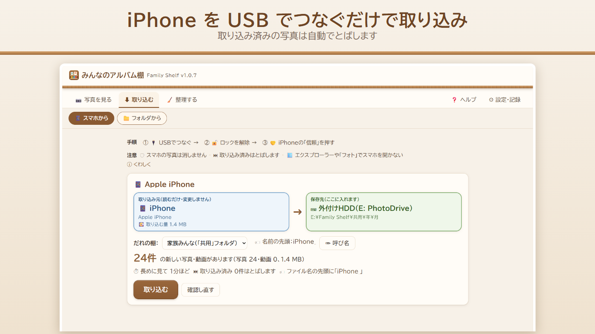
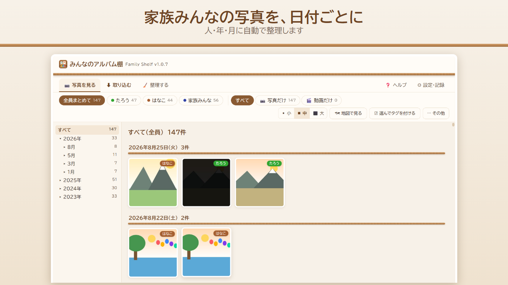
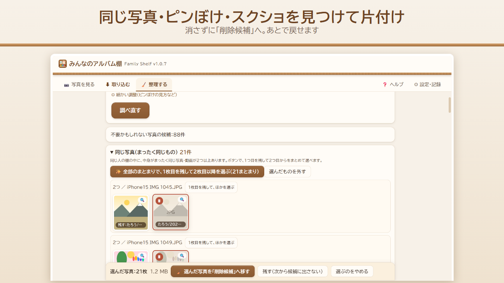

iPhone をつなぐだけ。
家族の写真を、パソコンの「棚」に。
「みんなのアルバム棚」は、iPhone を USB でつなぐだけで、写真と動画をパソコンや外付けHDDに取り込み、「だれの」「いつの」で自動的に並べる Windows 用のアプリです。
写真はインターネットに送りません。月額料金のかからない買い切りで、お試し版は無料です。

Windows 10（1809 以降）／ Windows 11。製品版 2,000円（税込）。お試し版は取り込み合計 3,000ファイルまで無料。

こんなご家庭に
- iPhone の写真がたまる一方で、容量が気になる
- クラウドの月額料金を払い続けるのは避けたい
- 家族それぞれの iPhone や古い外付けHDDに、写真が散らばっている
- パソコンに写真を移したいが、むずかしい操作は苦手
できること
- 📱 iPhone を USB でつなぐだけで取り込み（取り込み済みは自動でとばします）
- 🗂 人／年／月の棚に自動で整理。家族全員・人ごと・年月で見られます
- 📁 SDカード・USBメモリ・外付けHDD・パソコンのフォルダからも取り込み
- 🧹 同じ写真・似ている写真・ピンぼけ・スクリーンショットを見つけて片付け（消さずに「削除候補」へ。あとで戻せます）
- 🔒 写真・動画はインターネットに送りません。iPhone の中の写真も消しません


画面の写真は見本です。